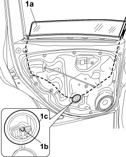
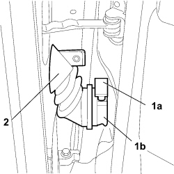
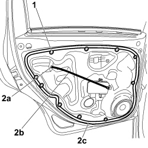

7010A08 REAR SIDE DOOR INTERIOR SUPPORT FRAME - R.R. WITH DOOR PANEL REMOVED
- Path
- Procedures > 70 FITTINGS > 7010 PASSENGER COMPARTMENT REAR SIDE DOORS > 7010A REAR SIDE DOOR ASSEMBLY > 7010A08 REAR SIDE DOOR INTERIOR SUPPORT FRAME - R.R. WITH DOOR PANEL REMOVED
- Kind
- repair procedure (removal / refitting; the operation number is the code)
- Applies to
- all engines; all production periods
- Interactive page
- https://sloeber94.github.io/elrnDB-fCrm/en/#/194000891
Applies to: all engines; all production periods
 Removing
Removing
 Refitting
Refitting1. Release the window (1a) from the retaining clip (1b) accessible via the inspection opening (1c), raise to the end of its travel and support as appropriate.

Applies to: all engines; all production periods
1. Lift up the ring nut (1a) and disconnect the rear side door coupling (1b).
Description | Connector | |
|---|---|---|
1b | LEFT REAR DOOR COUPLING |
Description | Connector | |
|---|---|---|
1b | RIGHT REAR DOOR COUPLING |
2. Prise up the rear side door joint bulkhead couplings and push into the door as far as possible.

Applies to: all engines; all production periods
1. Unscrew the bolts and move the support frame carefully.
- Disconnect the electrical connection for the door lock actuator.
Description | Connector | |
|---|---|---|
LEFT REAR DOOR LOCK GEARED MOTOR |
Description | Connector | |
|---|---|---|
RIGHT REAR DOOR LOCK GEARED MOTOR |
2. Release seal (2a) for passage of connection link (2b) and push inwards and remove support frame (2c).

Applies to: all engines; all production periods
Refitting
Removing- Check that the frame is undamaged and ensure the perimeter seal is intact and clean. Also check that the contact surface on the door frame is clean.
- Bring the support frame up to the door and fit the front side door junction bulkhead coupling in its seat.
- Insert the connection link in the support frame, fit the passage seal and connect the door lock actuator electrical connection.
Description | Connector | |
|---|---|---|
LEFT REAR DOOR LOCK GEARED MOTOR |
Description | Connector | |
|---|---|---|
RIGHT REAR DOOR LOCK GEARED MOTOR |
- Position the support frame on the door frame and tighten the fixing bolts.
- Connect the front side door junction and lower the ring nut.
Description | Connector | |
|---|---|---|
LEFT REAR DOOR COUPLING |
Description | Connector | |
|---|---|---|
RIGHT REAR DOOR COUPLING |
- Secure the window to the window opening mechanism retaining clip.
Topics linked from this page (4)
- D035 LEFT REAR DOOR COUPLING
- D036 RIGHT REAR DOOR COUPLING
- N055 LEFT REAR DOOR LOCK GEARED MOTOR
- N056 RIGHT REAR DOOR LOCK GEARED MOTOR